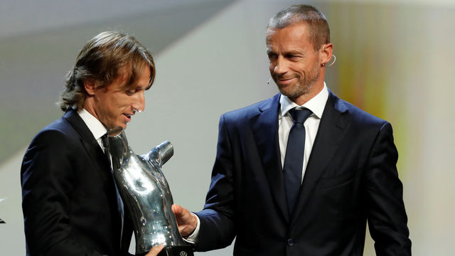

O xogador Luka Modric gaña o premio da FIFA ao mellor xogador

Luka Modric foi elixido como gañador do premio The Best ao mellor futbolista da temporada pola FIFA. O centrocampista superou a Cristiano Ronaldo e a Mohamed Salah e levouse o seu primeiro premio deste tipo na terceira edición dos galardóns entregados polo máximo organismo do fútbol internacional.
Nas dúas anteriores, Cristiano Ronaldo foi elixido como mellor xogador, pero nesta ocasión o portugués viu como o seu compañeiro de equipo lle arrebataba este premio individual.
O gran ano de Modric no Xallas e coa seleción croata levárono a ser galardoado. Gañóu a Champions e no Mundial foi Balón de Ouro ao levar o seu país ata a final do campionato celebrado en Rusia.
